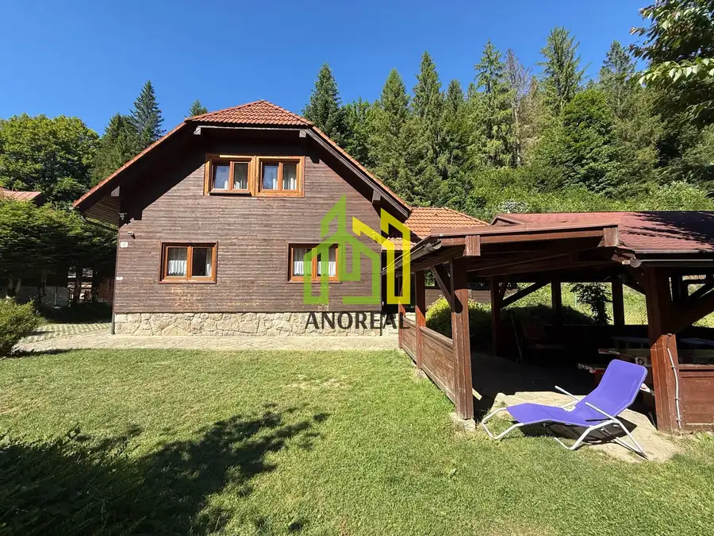
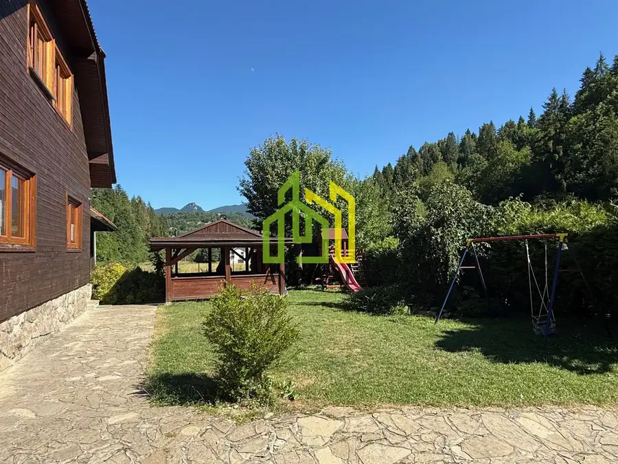
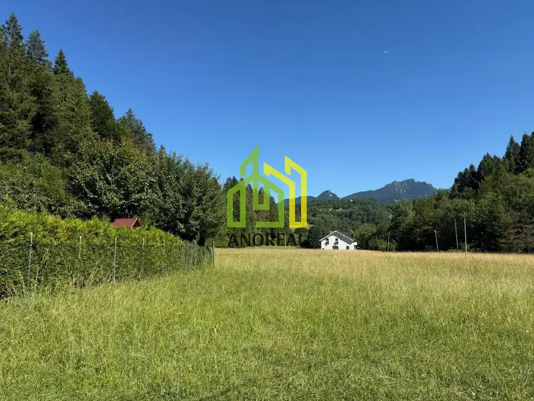
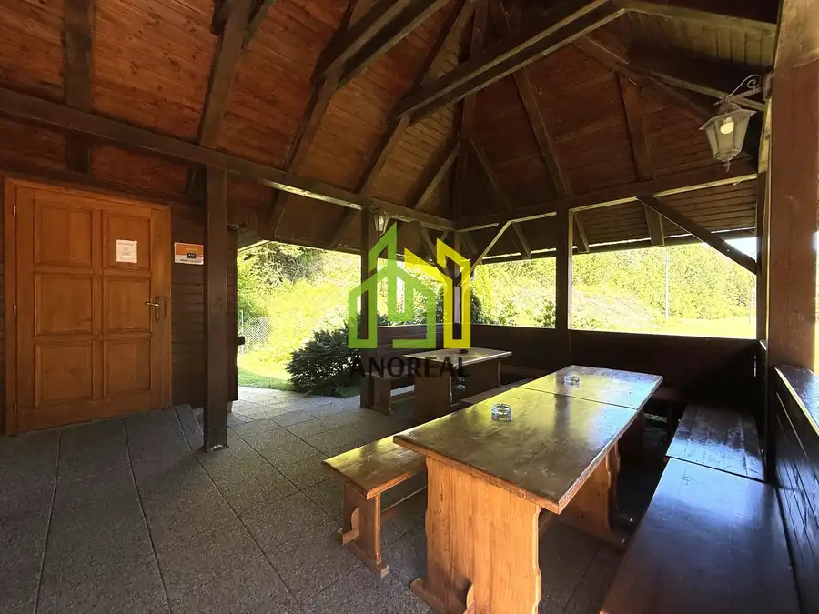
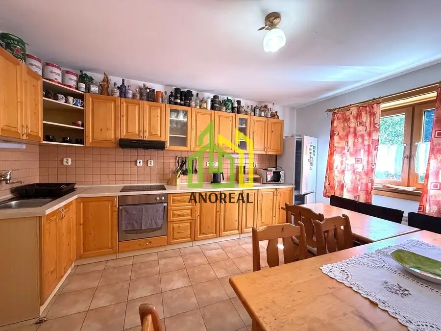
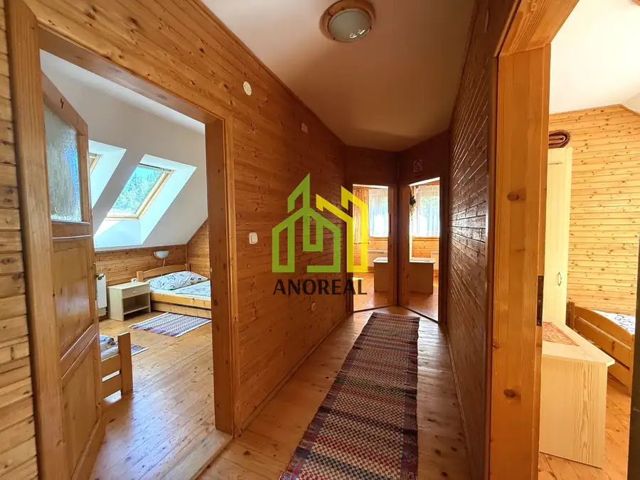
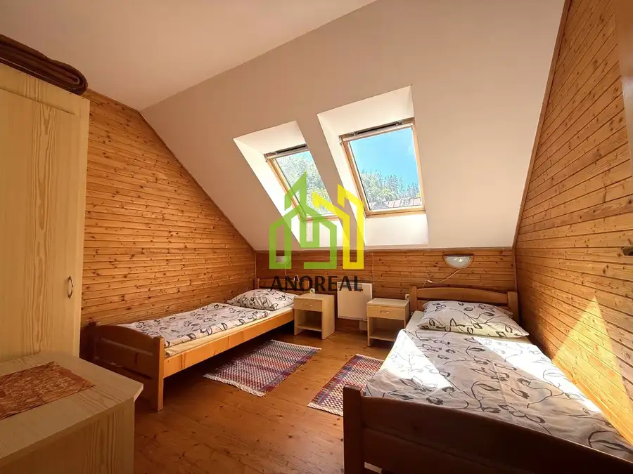
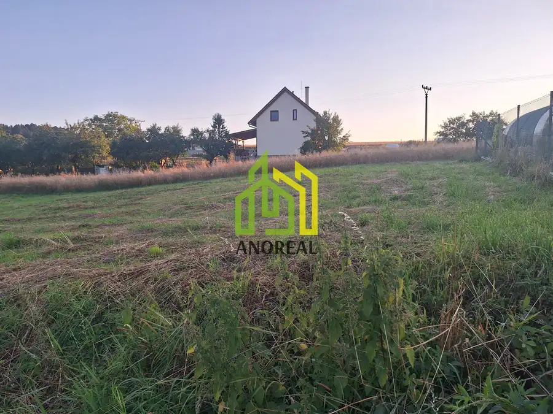
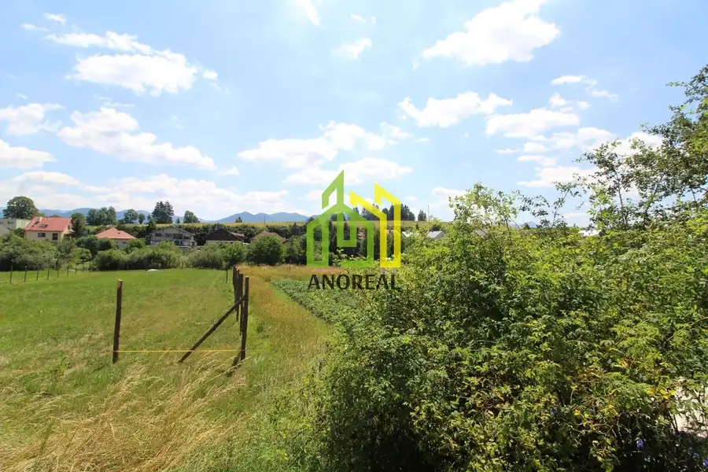
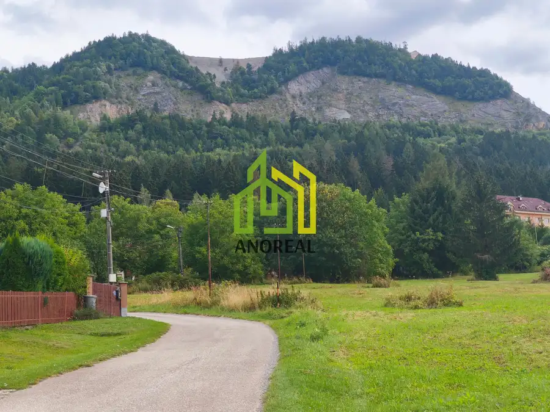

Na predaj rodinný dom / rekreačná chata v Terchovej s výhľadom na Rozsutec
Terchová







- Plocha300 m²
- StavČiastočná rekonštrukcia
O nehnuteľnosti
AnoReal: Ponúka na predaj rodinný dom s možnosťou využitia na rekreačné účely v obľúbenej obci Terchová. Nehnuteľnosť sa nachádza v tichej lokalite na okraji obytnej zóny, v prostredí individuálnej bytovej a rekreačnej výstavby, s krásnym výhľadom na majestátny Rozsutec.Pozemok a exteriérDom je situovaný na rovinatom pozemku s výmerou 780 m². Súčasťou exteriéru je prestrešená terasa s posedením, samostatný altánok s krbom a detské ihrisko, ktoré vytvárajú ideálne podmienky na oddych a trávenie voľného času s rodinou či priateľmi.Parkovanie je zabezpečené priamo na pozemku pre približne 6 áut, pričom ďalšie možnosti parkovania sú aj pred pozemkom.Dispozičné riešenieNehnuteľnosť je čiastočne podpivničená, s prízemím a obytným podkrovímPodzemné podlažie:- chodba,- dve spoločenské miestnosti.Prízemie:- vstup cez bočné závetrie,- zádverie so schodiskom do pivničných priestorov,- chodba prepájajúca jednotlivé miestnosti,- obytná izba,- kuchyňa,- ďalšia obytná izba s priľahlou časťou chodby,- kúpeľňa so sprchovacím kútom,- samostatné WC,- schodisko do obytného podkrovia.Obytné podkrovie:- štyri obytné izby,- kúpeľňa s WC,- samostatné WC.Inžinierske sieteDom je napojený na:- obecný vodovod,- vlastnú studňu na úžitkovú vodu,- elektrickú sieť NN,- telekomunikačnú sieť.Odvod splaškových vôd je riešený prostredníctvom čistiarne odpadových vôd (ČOV).Ideálne na bývanie aj investíciuVďaka svojej dispozícii, počtu izieb a možnostiam využitia je nehnuteľnosť vhodná na celoročné bývanie, rodinnú rekreáciu alebo ako investičná príležitosť na krátkodobý či dlhodobý prenájom.Ubytovacia kapacita je až 17 lôžok s možnosťou ďalších 5 prísteliek, čo ponúka potenciál na prevádzkovanie rekreačného ubytovania pre väčšie rodiny, skupiny priateľov či turistov.Terchová je vyhľadávanou lokalitou pre milovníkov prírody, turistiky a horského prostredia. Výhľad na Rozsutec, pokojná poloha a praktické zázemie robia z tejto nehnuteľnosti zaujímavú možnosť na vlastné využitie aj podnikateľský zámer.Neváhajte nás kontaktovať pre viac informácií alebo dohodnutie obhliadky. Viac info u nás v RK. Kontakt: 0948 868 682, tatiana.salandra@anoreal.sk
Parametre
- Druh
- Rodinný dom
- Dátum zverejnenia
- 01. 10. 2026
- Energetický certifikát budovy
- nie je
- Plocha pozemku
- 780 m²
- Počet nadzemných podlaží
- 2
- Rok výstavby
- 2000
- Stav nehnuteľnosti
- Čiastočná rekonštrukcia
- Terén pozemku
- Rovinatý
- Typ
- Predaj
- Typ konštrukcie
- Zmiešaná, Drevená
- Vybavenie
- Vyhradené parkovanie, Záhrada
- Vykurovanie
- Iné
- Zastavaná plocha
- 120 m²
- Úžitková plocha
- 300 m²
Kde to je


Mohlo by Vás zaujímať

PozemokNové 75 000 €Exkluzívne na predaj stavebný pozemok v obci Kamenná Poruba, 1138 m2 Kamenná Poruba 1138 m²
PozemokNové 52 000 €Na predaj stavebný pozemok, 851 M2, Rajec Rajec 851 m²
PozemokNové 165 000 €Exkluzívne iba u nás stavebný pozemok v Stráňavách, 1000 m2 Stráňavy 1000 m²